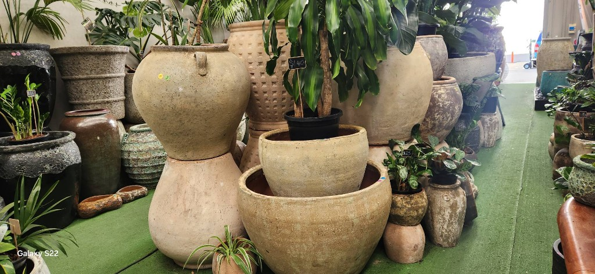

Cranbourne, Victoria
Hand-fired pottery.
A little bit of heaven.
Kiln-crafted pots in earthy textures, weathered glazes, and bold colour — styled with lush greenery in our indoor plant sanctuary.
Every piece tells a story of fire & clay
From crackled cream urns to distressed teal drips and hammered charcoal finishes — our pots are shaped by hand and finished in the kiln. Walk through rows of texture, pattern, and living plants that show how each vessel comes alive in your home.
The showcase
A garden of texture & colour
Filter by mood — then tap any image to see it full size. Every photo is from our Cranbourne showroom.
Our craft
Fired in the kiln.
Made to last.
Each pot begins as clay — shaped, textured, and glazed by artisans who embrace imperfection. The oven does the rest: heat transforms raw earth into durable ceramic with crackle, drip, and patina you can feel under your fingertips.
- Hand-finished surfaces — ribbed, pitted, smooth & crackled
- Weathered glazes in cream, teal, terracotta & charcoal
- Paired with indoor plants to inspire your space
Inspired by our glazes
Visit us
Your indoor plant specialist
Step into Little Bit of Heaven in Cranbourne — wander the green turf aisles, stack your favourites in your mind, and let our team help you find the perfect pot for your space. Follow us on Facebook for new arrivals and inspiration.
Little Bit of Heaven
- Cranbourne, Victoria, Australia
- Artisan pottery & indoor plants
- Kiln-fired, hand-finished ceramics
Hours & directions are updated on our Facebook page.